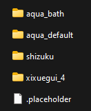
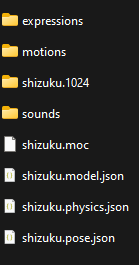

#
Live2D
This guide will walk you through the process of setting up and customizing the Live2D extension for your SillyTavern experience. This extension allows you to use Live2D animated models for your character, providing a dynamic and interactive element to your virtual character.
#
Prerequisites
Before you begin, ensure you've met the following prerequisites:
Branch Selection: Make sure you're using the latest version of SillyTavern to access the latest features and updates.
Extension Installation: Install the "Live2D" extension from the "Download Extensions & Assets" menu in the Extensions panel (represented by the stacked blocks icon).
Model Folder Placement: Place your Live2D model folders into the
/data/<user-handle>/assets/live2ddirectory. A properly organizedlive2dassets folder might look like this:
- A Live2D model folder should include all necessary components for the Live2D model, such as expressions, motions, textures, sounds, and settings files. Notably the
***.model.jsonfile must be at the root of the Live2D model folder for the model to be detected by the extension. In this example theshizukulive2d model folder may look like this:

- Note: Models can also be placed in character-specific folders, such as
/data/<user-handle>/characters/Shizuku/live2d/. However, models in character folders will only be accessible for that specific character.
- A Live2D model folder should include all necessary components for the Live2D model, such as expressions, motions, textures, sounds, and settings files. Notably the
#
Extension Settings
The Live2D extension offers various settings to customize the behavior of your animated model. Here are the key settings:
#
Global Settings
Enabled:
- Enable this checkbox to activate the extension, allowing your Live2D model to interact within SillyTavern.
- You can disable the extension if you want to use normal sprites only.
- You can disable the extension when you want to move normal sprites in a group chat and enable it again when you're ready to use Live2D models.
Follow Cursor:
- Enable this checkbox to make the Live2D model follow your cursor, provided that the model supports this feature.
Auto-send Interaction:
- Enable this checkbox to automatically trigger character interactions when you click on areas with mapped messages (refer to the hit areas section for details).
#
Debug Settings
These settings help you control the behavior and visibility of your Live2D model for debugging purposes.
Reset Model Before Animation:
- Enable this checkbox to reload the model before any animation. This forces the animation to start and allows you to spam clicks if necessary. Some models may require this to ensure that animations begin from a compatible state.
Show Model Frames:
- Enable this checkbox to display the model frame, making it easier to identify where to click to drag the model around. It also shows the hit area, if available. Hovering over a hit area will show its name.
Reload button
- Click this button to reload every live2d model. Use it in case something glitches.
#
Character Selection
These settings allow you to manage characters and assign Live2D models to them.
Refresh Button:
- Click the refresh button to update the list of characters in the current chat.
Select Character:
- Use the drop-down list to choose a character to assign a Live2D model to.
Remove Button:
- Click this button to delete all assigned models for a character. A confirmation prompt will appear to confirm the deletion.
#
Model Selection
Refresh Button:
- Click the refresh button if your Live2D model does not appear in the list.
Select Model:
- Choose a model from the list to assign it to the selected character.
- The model can be located in the asset folder or the current character's folder.
- The list displays the model folder name, its origin (asset or character), and the name of the detected model setting file.
- Note that some model folders may contain different versions of the same model. You can try different model files to see which one works best.
- Selecting none will use normal sprites if there is any
- Settings are saved per character and model
#
Model Settings
Model Scale:
- Use the slider to adjust the size of the model, making it larger or smaller.
Model Center X Offset:
- Use the slider to change the horizontal position of the model relative to the window center.
Model Center Y Offset:
- Use the slider to adjust the vertical position of the model relative to the window center.
#
Remarks
- The settings are saved and carry over different chats.
- You can also drag the model with your mouse, and those settings will be updated and saved.
- Use these UI settings to bring your model back on the screen if you somehow made it out of view. Also, check the "Show frame" checkbox to see clearly where you can click to drag the model.
#
Model Talk
Param mouth open Y id
- Select from the list the ID of the parameter corresponding to the model's mouth Y value. Not all models have one, and names may vary from model to model. Usually something like "PARAM_MOUTH_OPEN_Y" or "ParamMouthOpenY". Check the model when selecting an element from the list; it will try to run the speak animation. If the mouth moves, you got it!
Mouth movement speed
- Adjust the slider to change the movement speed of the mouth animation.
Time per character
- Set the time duration of each character. The duration of the talk animation will be this time multiplied by the number of characters of the message.
#
Remarks
- This mouth animation does not work on every model and every animation. Even if your model has animations where the mouth moves, it does not mean the mouth animation can be controlled by this extension. If nothing shows in the parameter list, your model is probably made with a too old version of Live2D to access the parameters properly.
#
Model Animations
Starter animation
- Select an expression and motion from the lists that will play when starting a chat with the character. You can also add a delay during which the model will be invisible if you need to hide the character for some time to achieve a perfect effect.
Default animation
- Select an expression and motion from the list that will play when the character sends a message. Use a fallback animation when using the classify expression extension.
#
Remarks
- Animations will play when you select one in the lists.
- Use the replay button to replay the selected animation.
- Some models have expressions defined as motions.
- If nothing shows in the lists, it's probable your model's setting file has no expressions/motions defined.
#
Hit areas mapping
Default click animation
- Select an expression and motion from the list that will play when you click on the model. You can also set a message that will be sent as a user message.
Hit areas
- If the model has hit areas, they will be listed, and you can assign an animation/message to each of them.
#
Remarks
- Some models have no hit areas, but the default click is detected for all.
- The default click will trigger if you click on a hit area with nothing mapped or if you click outside of any hit area.
- Hit areas have priority defined in the model; for example, "mouth" is inside "head." If it does not behave properly, it may be due to the model file.
- For some models, animations need to be finished before starting another one. Use the debug checkbox if you want to force the refresh and spam animations.
#
Classified Expressions Mapping
Requirements
- Requires the use of the classify expression extension; otherwise, it will fall back to the default animation.
Mapping
- For each detected emotion by the classify extension, you can assign an expression/motion animation.
#
Remarks
- If the previous animation did not finish when a new message is received, it's possible that the new animation will not play. This behavior is dependent on the Live2D model. Use the debug checkbox if you want to force the animation to play.
Thank you for following this guide! Your SillyTavern experience is now enriched with animated and interactive Live2D models.